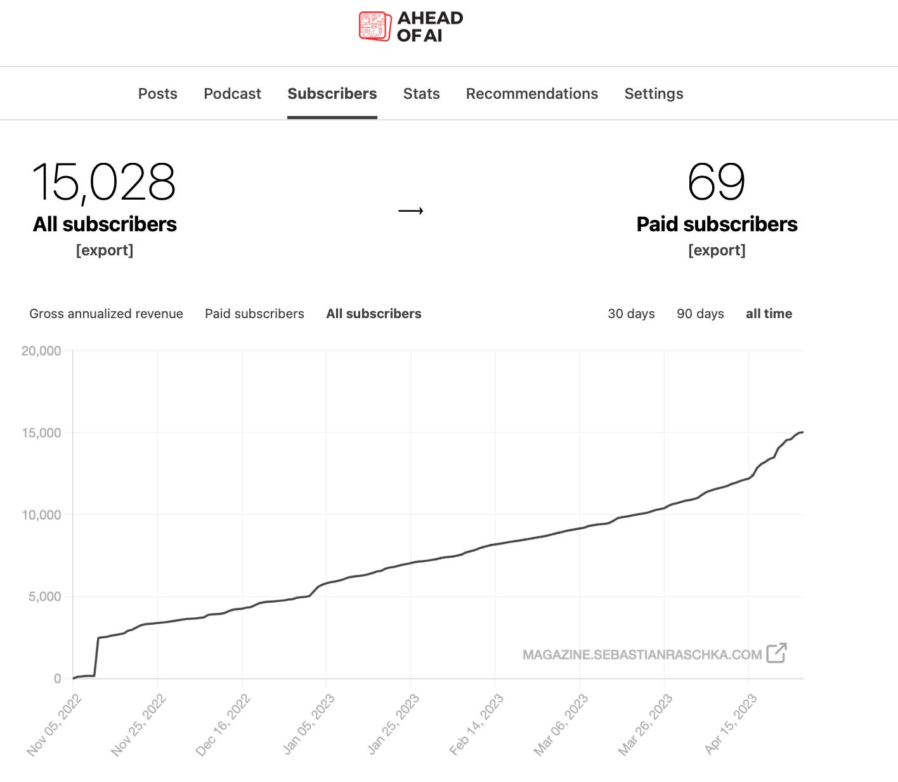

Starting Substack as a AI Researcher
What is Substack?
From their about page: “On Substack, writers and creators can publish their work and make money from paid subscriptions while supporters can directly sustain the work they deeply value.”
It’s a platform where you can publish what you want in an organized way, with great analytics tools and a powerful recommendation and search system.
I like to think of it as a nicer version of Medium, with more than just SEO dumped from Google.
I really love the network from a design perspective. It’s an organized recommendation system based on multiple aspects.
Why use Substack as an AI Researcher?
I used LinkedIn and Medium, and I don’t find them very useful for engagement or building a real network.
My gravity is very tiny in these networks and I can’t get bigger for multiple reasons I will discuss later.
The same is true for X, but it’s a very good place for the ML community.
My reasons:
Improve my writing style. I am not good at writing or English, but I am trying to do my best. Communication is a very important skill for my work as a researcher.
I build products I want people to learn more about…more later.
I have services I want to market…more later.
Did you forget something?
^_^
Die, empty, and publish your knowledge!
Actually, the main reason for me to write is that I feel lonely in my journey of learning about DL and software engineering.
And I feel bored most of the time.
I love the feeling that I am writing and archiving my life. This reminds me that I am doing hard work, learning new things, and my life will not end without doing great things from my point of view.
Recapping what I learned when I write about it makes the concepts stick in your mind, and you get more insights from people’s comments. This is very helpful for me.
For readers, you can see what I do, and you may be interested in it, be inspired, and learn from my mistakes.
Following the Giants?
When I started learning about DL, I searched for a great book about DL and PyTorch that is well explained in both code and theory.
I found his Substack where he publishes what he learns. At the same time, I found similar people like
These people I follow and appreciate what they provide!
So I started to ask, why do they use Substack?
The answer is very clear if you know them ^_^
Quick analysis
The UI/UX, speed of the website, and animations are very cool.
Let’s look at the level I want to reach :)
Ahead of AI
On 28/04/2023
It reached 15,028 free subscribers and only 69 paid ones!
This is very disappointing for me.
You don’t know if these are monthly or yearly paid and how much they give.
Of course, I don’t know how much he earns or others. I want to motivate myself and not create high expectations. He is doing great stuff, really great. His content is in the top 5 for me for AI and real content.
No scams, no “read this paper,” “look at this book,” “here are the top 1000 chatbots that are better than 10 who are better than GPT!!”
Oh my god, QwenClaudeMixtral just released a model that will convert space into water in the year 1021932103120931920.
This is very silly if you respect your readers’ minds!

What about now?
He has more than 105k+ and is #71 Rising in Technology. I don’t know why 71!! He must be top 5.
Jay Alammar => 23k+ subscribers
Maarten Grootendorst => 20k+ subscribers
Paul Iusztin => 25k+ subscribers
Most likes per post are around 10 to 20 only!
The comments are around 0 to 5 :)
My Goal in the coming 6 months?
I am doing multiple things at the current time.
I am on 4 projects and doing my Master Thesis and a lot of projects and websites I am developing.
I will not be able to provide much, but I will try my best.
I don’t care about the number of subscribers, I care about real ones, who will comment and read the content. If I can get 30 people to read it, this is great. Really, if you imagine 30 people in your room watching what you did, it’s mind-blowing. Imagine 300 or 3,000…Wow.
For money, if I can get only $200 per month, this is very great as a start.
Disease from other websites?
I noticed the following issues on the first day:
Sh*** shorts and copyright issues: By copyright, I mean some people take others’ content from outside Substack and post it as if it is their own and get followers for this! This is very bad. I don’t like strict copyright like “you copied this sentence” or “used a logo,” but stealing the whole content!!!
Very short articles compared to normal tweets! I found a lot of articles that appeared to me are like tweets…I thought I was in a place where people write in-depth content, not clickbait.
I don’t talk about the post but the long-form ones.
- Drop your Substack fake numbers: A lot of people post “drop your Substack below and whatever it’s about I will exchange” and multiple similar things!! What is the
- purpose then… you have 1 million subscribers, then what?
There is no official API for Substack
The most annoying thing in Substack is there is no current API to develop apps, create extensions, and automate a lot of things.
What things can I write about?
You seem to love to talk a lot? What will you write then?
It’s very obvious…
I want to talk about the following:
Compute world with AI, fine-tuning/training, and cloud instances, etc.
Products I use and tried, not product reviews.
Books and papers I read and summarized.
TILs, what I learned today!
Novel writing about the AI world like vector databases, embedding, and searching, etc.
Applications I build and services I provide.
My workflow and software i use.
Substack tips and analysis.
you can find links here for now: 1. Gpuvec publications
- Kareem’s TILs